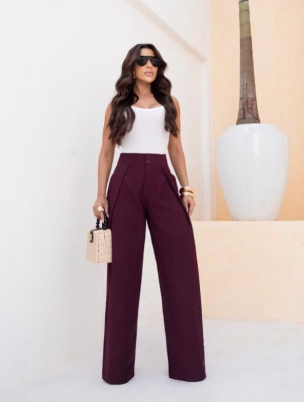

LOOK 02Azul em destaque
Cor frontal e silhueta definida para uma leitura imediata da peça.
Uma vitrine digital construída para valorizar a roupa, o caimento e a presença de cada produção — sem excesso visual.

O contraste entre branco e vinho cria uma leitura limpa e sofisticada. Por isso esta imagem ganha espaço real de campanha, sem filtros pesados, molduras pequenas ou cortes que escondam o look.
Explorar @amasu.loja ↗Os vídeos entram como prova visual do look: silenciosos, contínuos e em proporção vertical para preservar o enquadramento original.
Cor frontal e silhueta definida para uma leitura imediata da peça.
Uma composição leve com destaque para movimento e volume.
Um look claro apresentado com respiro para valorizar proporção e detalhes.
Uma experiência pensada para deixar a roupa falar primeiro.
Veja mais produções e confirme disponibilidade diretamente pelo perfil oficial da AMASU.